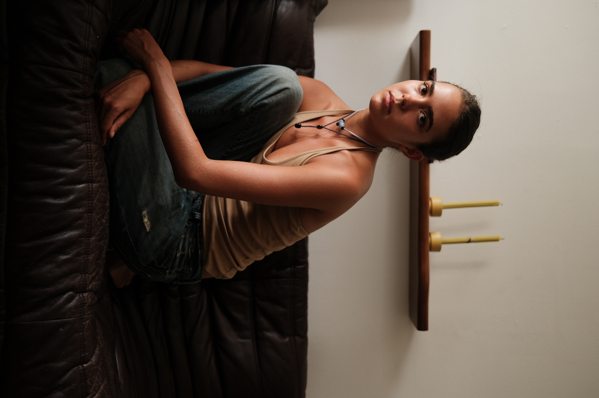

Product & Brand Design Intern, Juma JewelryMay 2026 – Present
Brand identity and web presence; flame-worked glass beads; styling and art direction of the collection.

PhotoAmandine Mangon is a French-American multidisciplinary artist and designer based in Brooklyn, New York. She studies Integrated Design and Media at NYU’s Tandon School of Engineering, with a minor in the Business of Entertainment, Media, and Technology.
Her work sits at the intersection of art and technology, moving between screens and physical objects. She designed the brand identity and UI/UX for Heritage, a goal-based app connecting people to personalized opportunities. She currently works at Juma Jewelry, where she flame-works and hand-fabricates glass beads for necklaces. She is drawn to the craft of making things people can connect with.
The environment is a recurring thread in her practice. At Earth Celebrations, she designed visual materials for an annual urban ecological pilgrimage: a public procession through the East Village of giant puppets and site-specific performances across music, dance, theater, and poetry. Her collages are made from secondhand magazines and collected materials.
Her personal projects blend code, sound, and visuals, and are all rooted in storytelling. She built this site herself, down to its randomized collage generator. She co-founded ineverseeyou, an art and technology collective that brings together artists and engineers through theme-based creative “cycles,” with contributions from more than 20 artists.
At the core of it all is a love of problem solving. With curiosity and optimism, Amandine approaches every project as a puzzle worth understanding.
Brand identity and web presence; flame-worked glass beads; styling and art direction of the collection.
UI/UX and brand identity for a goal-based app; user personas, competitive analysis, and user research.
Posters, infographics, and visual assets for an annual urban ecological pilgrimage and its public procession.
Art and technology collective; designed its theme-based “cycle” model; curates work from 20+ artists alongside 8 founding members.
Designed and built from scratch in HTML, CSS, JavaScript, and p5.js, including the randomized collage generator.
B.S. Integrated Design & Media
Minor in Business of Entertainment, Media, and Technology